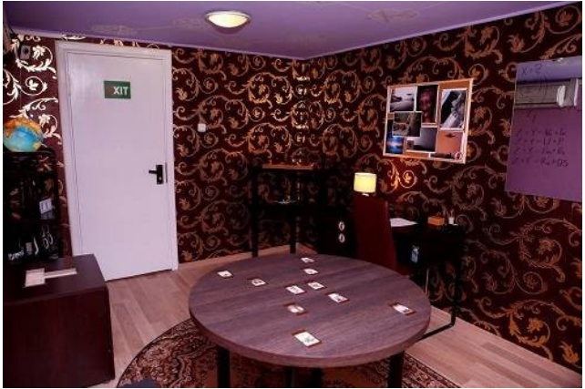
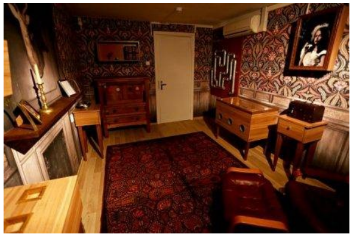

Ką būtina žinoti prieš renkantis pabėgimo kambarį?
Ką būtina žinoti prieš renkantis pabėgimo kambarį?
Logiškumas. Ar iš kambario galima ištrūkti remiantis vien
logika, ar reikės ieškoti daiktų atsitiktinėse vietose, spėlioti?
Estetiškumas. Ar kambarys-švarus, ar jame teks teptis rankas
bei daryti kas nevisai malonu?
Galvosūkių tipai. Ar kambaryje daug klasikinių galvosūkių
(matematiniai uždaviniai, dėlionės ir pan.), ar galvosūkiai
originalūs ir pirmiausia dar reikia dalyviams suprasti, kad tai
galvosūkis?
Atmosfera. Ar kambaryje atkuriamas konkretus
kūrinys/laikotarpis, ar labiau koncentruojamasi į užduotis?
Pagalba. Kaip yra su organizatorių patarimais
“įstrigus”-galima prašyti bet kiek (tai-dažniausias variantas) /
ribojami / visai nėra?
Technika. Ar kambaryje naudojama speciali
elektrinė/elektroninė technika, ar perdaryti paprasti daiktai?
Pašaliniai daiktai. Kiek kambaryje guli nereikalingų
pabėgimui (klaidinančių) daiktų: jų gali visai nebūti, būti keletas
arba labai daug.
Sudėtingumas. Koks procentas žmonių ištrūksta iš kambario
laiku? Dažnai tai būna ~50 proc.
Siužetas: kambarys, kuriame užrakinami žaidėjai, priklausė astronomui,
įtikėjusiam, kad anapus Žemės planetos dedasi keisti baisūs dalykai.
Jis manėsi radęs tam įrodymų, tačiau pasaulis jį tiesiog laikė
pamišėliu…
Išties, vos įžengus į kambarį nesunku suabejoti jo “kūrėjo” minčių
tiesumu: ten kabo keistos nuotraukos, aprašinėtos net lubos, nemažai
įvairių simbolių. Jums reikės visoje toje kebeknėje atrasti tinkamus
kodus. Vienus kodus panaudosite spynutėse, kitus – specialioje
elektroninėje įrangoje. Astronomas, bijodamas persekiojimo, kai ką
paslėpė itin įmantriai.
Visgi, svarbiausia kambario kūrėjams ne tema, o patys galvosūkiai,
kuriuos stengtasi padaryti kuo įvairesnius. Ant daiktų užklijuotos
užuominos tiksliai nurodo, į ką pakaks vien tik pažiūrėti (o ką,
tikėtina – ir pajudinti). Nereiškia, kad bus paprasta: kelios užduotys
yra tokios, kad vien sugalvoti idėją, kaip jas atlikti, nepakaks –
įgyvendinti visa tai realybėje gali užtrukti net ilgiau.
Kitaip nei daugelyje pabėgimo kambarių, norintiems įveikti
“Išprotėjusio astronomo” kambarį prireiks ir šiek tiek žinių: anglų
kalbos ir matematikos. Tiesa, tos žinios – ne aukštesnio nei
aštuntos-devintos klasės lygio.

Jums patiks, jei:
Norite kambario miesto centre, kuriame sudaryta jauki atmosfera.
Jums patinka, kai iš karto galite suprasti, kur yra galvosūkiai –
tačiau vis tiek reikia ilgai mąstyti, kaip juos spręsti.
Mėgstate švelniai mistines istorijas.
Pageidaujate, kad kambaryje būtų specialiai jam kurtos įrangos.
Miške gyveno šeima. Bet jau kuris laikas jos niekas nematė, o jų
trobelė atrodo apleista. Keliaujate išsiaiškinti, kas ten atsitiko. Ir
netyčia užsitrenkiate tamsokame trobelės viduje.
O ten kiekvienas daiktas, kiekvienas baldas glaudžia savyje paslaptį.
Kiekvieno jų viduje viduje tūno užuominos, padėsiančios atverti dar
daugiau slaptų erdvių. Vienas jų pasieksite perpratę spynelių kodus
(išmąstyti nebus lengva). Tačiau kitus daiktus atidaryti teks kur kas
paslaptingesniais ir netikėtesniais būdais – vien sugalvoti “kaip”
užtruks. Prireiks ne tik gryno mąstymo, tačiau ir gero žiupsnio
intuicijos (o taip pat, kad bent vienas dalyvis mokėtų angliškai)
Galiausiai, atidarius visas trobelės slaptavietes, paskutinėje jūsų
lauks ne tik raktas į išorę, bet ir užuomina, kas gi iki jums ateinant
įvyko trobelės viduje…
Pasak šeimininkų, tai – pats sudėtingiausias iš “Smart Rooms” pabėgimo
kambarių. Tačiau ilgam “įstrigti” dalyviams jie neleidžia: duoda
užuominų per raciją.

Jums patiks, jei:
Norite kambario miesto centre, kuriame sudaryta jauki atmosfera.
Jums patinka, kai iš karto galite suprasti, kur yra galvosūkiai –
tačiau vis tiek reikia ilgai mąstyti, kaip juos spręsti.
Mėgstate švelniai mistines istorijas.
Pageidaujate, kad kambaryje būtų specialiai jam kurtos įrangos.